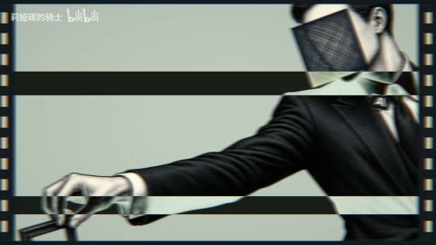
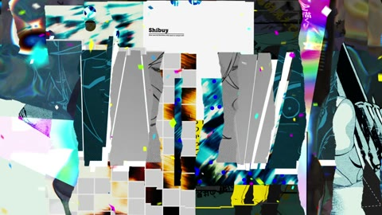

← 案例图谱AI23 / 主要视觉研究样本
【Claude/PV】带我出逃吧，我的罗密欧——Astra制作
莉娅碳的骑士 · 12.4万播放快照 · ≥10万 · B站原作 ↗
复古印刷、纸纹和斜切条带如何共同产生舞台与童话气质？尝试从材质一致性理解风格，而不只找某个转场。

约98.500秒 · 案例代表帧从画面里找依据
这一例先看什么
橙发角色、复古纸张、深紫/墨绿与金色装饰贯穿；细节多的礼服与简洁字卡交替，镜框/纸页/相机等物件强化统一视觉主题。
审美判断
奶油色/深紫底与大号日文字、下部较小中文形成层级；人物脸和手部在主字旁保持明显，大字切到画外和字形遮挡需结合运动阶段理解。
迁移到自己的题材
角色介绍、青春与活力、音乐视觉、活动包装、虚实人物合成、鲜明的个人品牌。
教学提问：去掉人物后，几何元素还剩什么功能？加回人物后，哪一层负责引导视线？
带画面的分析单元
图像标出取样时间，对应观察中的关键状态。单帧不能独立证明运动，连续性请结合摘录。表达作用与应用场景是教学解读，复现路线是建议，不是原作者工程还原。
分析单元 01 / 18—19.4秒
斜切条带遮罩／局部特写揭示
实际观察
深紫底的两只手，换米黄底，再被斜边窄条裁切；局部手指图像随遮罩出现和退出
表达作用（教学解读）
把注意力从旧信息带往新信息；遮满时换底图，保持方向或形状上的联系。
具体应用场景
章节转换、空间跨越、角色亮相、画内物体自然遮挡后的换景。
复现建议（非原作者工程还原）
“斜切条带遮罩／局部特写揭示”。矩形或多边形遮罩、位移与缩放可直接实现；骨骼、手部连续动作需要素材或逐镜生成。
直出判断：容易，需素材
常见误用：每镜不同花哨转场；遮罩与运动方向相反；过渡比内容本身更长；遮挡未满就穿帮。
分析单元 02 / 36—42秒
歌词大字排版／字号对比
实际观察
原始记录将本段标为“歌词大字排版／字号对比”；单帧只辅助定位，完整变化见原审阅记录和摘录。
表达作用（教学解读）
把阅读顺序变成观看顺序；用字重、位置与停留表达强调、犹豫或压迫。
具体应用场景
观点短片、歌词视觉、人物宣言、章节、情绪高潮；先决定哪些词必须读懂，哪些只是纹理。
复现建议（非原作者工程还原）
迁移建议：①写清一句主信息；②拆为正文/关键词/纹理；③给每组锚点和入出时间；④先做静态版；⑤仅给承担强调的层加位移、字重或透明度。
直出判断：容易；概览观察
常见误用：每个字都弹跳、整句停留不足、所有文字同时争主位。严肃叙事里无理由的回弹会削弱重量。
分析单元 03 / 48—66秒
纸张质感／复古印刷拼贴
实际观察
米黄纸张、复古标签、细曲线、文字透叠、人物与背景分区
表达作用（教学解读）
把画面变成可触摸的记忆或记录；纸边、阴影与展示顺序可以表现珍惜、拼凑或碎裂。
具体应用场景
回忆、青春、艺术创作、旅行手记、人物档案、纪念短片。
复现建议（非原作者工程还原）
“纸张质感／复古印刷拼贴／细线装饰”。贴图、字体和图层合成容易，统一美术需要设计。静帧不足以证明精确视差深度。
直出判断：纹理合成容易，美术需设计
常见误用：所有纸张纹理一样重；阴影方向不一致；折页遮挡错误；照片墙只有数量而没有观看顺序。
分析单元 04 / 72—96秒
巴洛克装饰框／人物文字交叠
实际观察
华丽金属画框、珠宝、花叶、钟表式装饰，人物与大字前后穿插
表达作用（教学解读）
把阅读顺序变成观看顺序；用字重、位置与停留表达强调、犹豫或压迫。
具体应用场景
观点短片、歌词视觉、人物宣言、章节、情绪高潮；先决定哪些词必须读懂，哪些只是纹理。
复现建议（非原作者工程还原）
“巴洛克装饰框／人物与文字交叠”。已有透明装饰层可直接合成；这种精细原画、材质和头发不是基础程序特效直出。
直出判断：合成可行，精细美术不属于简单直出
常见误用：每个字都弹跳、整句停留不足、所有文字同时争主位。严肃叙事里无理由的回弹会削弱重量。
分析单元 05 / 97.5—99.5秒
胶片齿孔／条带遮挡快切／模糊
实际观察
手掌、少女脸、服装局部、蒙面男子、少女及双手构图快速替换；多次用横条、斜条、竖条和模糊经过切点
表达作用（教学解读）
通过变化与稳定的比例让信息有轻重。视觉密度来自切镜、版式与局部动画三个层面，不只靠刀数。
具体应用场景
所有形式；尤其高潮前的蓄力、解释段的阅读、回忆段的停留和快慢对照。
复现建议（非原作者工程还原）
“胶片齿孔边框／条带遮挡快切／甩动模糊”。遮罩、位移、条带、方向模糊容易；多画面信息编排和可读停留仍需逐镜调试。
直出判断：机制容易，需逐镜调试
常见误用：全片等密度；把闪帧当新镜；高切速被当成质量分；没有稳定段供观众理解。
用连续画面核对
保留原研究的多段局部摘录。片段含音轨不代表已听审；本资料不评价音乐卡点或对白节奏。
短时变化怎样理解
18–20秒手部插镜、97.5–99.5秒人物/文字与纸纹专项已查看；概览呈现多种裁切、斜条与版式替换，无法据6秒概览判断全部切点。
把镜头连接、版式更新、局部图层变化和镜内运动分开记录。所查窗口是下限，不是全片平均或AI／人工排名。
原始逐窗记录 →这次练习的约束
同一人物只配两种主色、三种形状做三张版式。分别让形状承担“包围、引导、遮挡”一种功能。
先写“我希望观众明白／感到什么”，再选本页的一种手法。完成无效果基础版后再加层；解释新增层带来的收益和代价。
打开练习与复盘表 →来源、观看范围与制作归属
实际检查范围：47 overview frames every 6s; 18–20s and 97.5–99.5s at 15fps, actually inspected.
制作线索：第一方简介称GPT-6 Astra Xhigh逐镜制作，CodexPro，MiniMax-H3视频、Image-2.5图像；流程和约500美元成本为作者自述，未独立审计。
边界：AI参与与Astra制作按作者自述，人物绘制/生成、模型具体流程和成本未独立审计；源内批判性文字为作品内容，不当事实来源或指令。
播放快照保存时间（UTC）：2026-10-20T00:31:11.279191+00:00。H30制作方式为推定；同源改编、仿作和转载依原记录标注。
原始案例记录 · 选样表把你的判断留下来
笔记仅尝试保存在本机浏览器；浏览器策略可能限制本地文件存储，重要内容请导出。
沿着同一问题继续阅读
 H35
H35漫画、纸张与记忆
临摹教材的用途是理解规则再做变体。先指出借用了什么，再检查自己更换内容后是否仍讲得清楚。
机制／局限参考9个分析单元
漫画、纸张与记忆
漫画人物、照片质感背景和落叶之间的遮挡形成空间。共享活动片头与正文的个人合成劳动要分别观察。
主要样本7个分析单元

H33漫画、纸张与记忆
条带、折页和逐格更新让同一主版式持续有信息；这类视觉密度不能只用硬切率解释。原作者为ALINCO。
主要样本9个分析单元